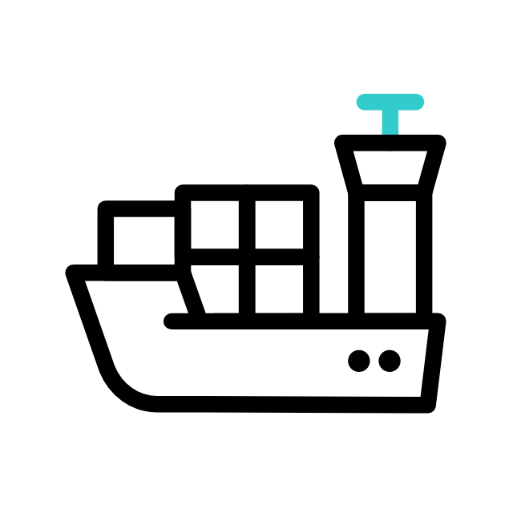
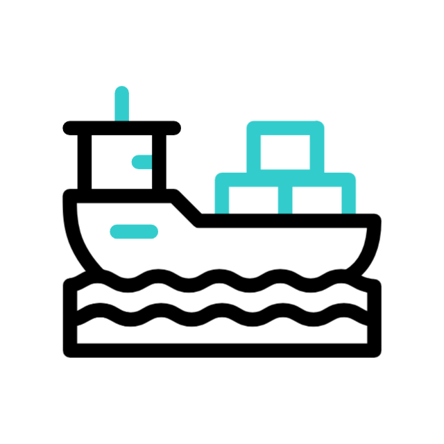

Apresentação: Desvendando a Logística Moderna
Logística / IEL
Explore o universo que move o mundo: a logística, desde o transporte eficiente até a armazenagem estratégica.
Temas: Armazenagem e Transporte.
Transporte: A Linha Vital da Cadeia de Suprimentos
O transporte é a espinha dorsal da logística, conectando fornecedores, fabricantes, distribuidores e consumidores em todo o mundo.
Sem ele, produtos e matérias-primas não chegariam aos seus destinos, paralisando a economia global. Exploraremos os principais modais.
Transporte Rodoviário: Flexibilidade e Capilaridade
É o modal mais utilizado no Brasil devido à sua **flexibilidade** e capacidade de atender a **curtas e médias distâncias**, chegando a praticamente qualquer lugar.
- Vantagens: Porta a porta, agilidade em curtas distâncias, ideal para cargas fracionadas.
- Desvantagens: Alto custo por tonelada/km em longas distâncias, sujeito a congestionamentos e infraestrutura rodoviária.
- Cargas Comuns: Produtos manufaturados, alimentos, eletrônicos, bens de consumo.
Transporte Aéreo: Velocidade e Urgência
Essencial para entregas **rápidas** e de **alto valor agregado**, o transporte aéreo é a escolha ideal quando a velocidade é crítica.
- Vantagens: Rapidez incomparável, segurança elevada, ideal para perecíveis e eletrônicos.
- Desvantagens: Custo muito elevado, capacidade de carga limitada, restrições a certos tipos de produtos.
- Cargas Comuns: Medicamentos, eletrônicos, documentos, amostras, flores, peças de alta tecnologia.
Transporte Marítimo: Volume e Alcance Global
O modal marítimo é insuperável para o transporte de **grandes volumes** e **longas distâncias**, sendo a espinha dorsal do comércio internacional.
- Vantagens: Baixo custo por tonelada/km, grande capacidade de carga, ideal para comércio global.
- Desvantagens: Lenta, dependente de portos, sujeito a condições climáticas.
- Cargas Comuns: Granéis (minério, grãos), petróleo, contêineres (produtos diversos), veículos.

Transporte Fluvial: Sustentabilidade e Capacidade em Hidrovias
Utiliza rios e lagos como vias de transporte, sendo um modal **sustentável** e de **baixo custo** para movimentação de grandes volumes em áreas com boa malha hidroviária.
- Vantagens: Ecológico, baixo custo operacional, alta capacidade de carga.
- Desvantagens: Restrito a áreas com rios navegáveis, lento, dependente de calado e clima.
- Cargas Comuns: Minérios, grãos, carvão, madeira, combustíveis.

Transporte por Dutos: Contínuo e Seguro
Utilizado para movimentar **grandes quantidades** de líquidos (petróleo, água), gases (gás natural) e, ocasionalmente, sólidos (minérios em suspensão) através de tubulações subterrâneas ou elevadas.
- Vantagens: Alta capacidade, baixo custo operacional após implantação, segurança.
- Desvantagens: Alto custo inicial, inflexível (rota fixa), restrito a produtos específicos.
- Cargas Comuns: Petróleo bruto e derivados, gás natural, água, produtos químicos.
Armazenagem: O Elo Estratégico da Cadeia de Suprimentos
A armazenagem é mais do que um simples depósito; é uma função logística vital que envolve o **planejamento**, a **organização** e o **controle** do fluxo de mercadorias.
Ela garante a disponibilidade dos produtos no momento certo, reduzindo custos e otimizando processos.
Armazém vs. Estoque: Entendendo as Diferenças
É comum confundir os termos, mas eles possuem significados distintos e complementares na logística:
- Armazém: É o **espaço físico** (edifício, galpão) onde as mercadorias são guardadas. Envolve a estrutura, equipamentos e layout.
- Estoque: Refere-se à **quantidade de mercadorias ou insumos** que estão armazenados nesse espaço físico. É o volume de bens disponíveis.
O armazém é o continente, o estoque é o conteúdo.
Armazenagem Refrigerada: Mantendo a Qualidade e Frescor
Essencial para produtos **perecíveis** ou que requerem controle rigoroso de temperatura e umidade para manter sua qualidade e validade.
- Características: Ambientes com temperaturas controladas (resfriados ou congelados), monitoramento constante, equipamentos específicos.
- Aplicações: Alimentos (carnes, laticínios, frutas, vegetais), medicamentos, produtos químicos sensíveis à temperatura.
Armazenagem Seca: Base para Produtos Não Perecíveis
É o tipo mais comum de armazenagem, projetado para produtos que não necessitam de controle de temperatura ou umidade específicos, apenas um ambiente **seco e arejado**.
- Características: Ambientes com temperatura ambiente, ventilação adequada, proteção contra intempéries e pragas.
- Aplicações: Produtos manufaturados, eletrônicos, roupas, materiais de construção, produtos embalados não alimentícios.
Armazenagem de Produtos Tóxicos: Segurança em Primeiro Lugar
Requer áreas **isoladas**, **ventiladas** e com **rigorosas normas de segurança** para evitar vazamentos, contaminação e riscos à saúde e ao meio ambiente.
- Características: Isolamento, contenção de derramamentos, sistemas de ventilação e exaustão, sinalização de perigo.
- Normas: Segue legislações ambientais e de segurança específicas, como NBRs e regulamentações da ANVISA.
Armazenagem de Produtos Inflamáveis: Prevenção é Essencial
Destinada a materiais que podem **pegar fogo facilmente**, exigindo medidas extremas de prevenção de incêndios e sistemas de combate a chamas.
- Características: Áreas especiais com barreiras corta-fogo, sprinklers, detecção de fumaça, aterramento e controle de fontes de ignição.
- Normas: Rigorosas normas de segurança contra incêndio (Corpo de Bombeiros, NBRs).
Armazenagem de Granel: Volumes Massivos e Eficiência
Utilizada para produtos que não são embalados individualmente, como **sólidos (grãos, minérios)** ou **líquidos (combustíveis, produtos químicos)**, armazenados em grandes volumes.
- Características: Silos, tanques, pilhas a céu aberto, transportadores de correia ou pneumáticos.
- Vantagens: Ótimo para grandes quantidades, manuseio eficiente com equipamentos específicos.
Cross-Docking: Agilidade Sem Estocagem
Uma estratégia que **minimiza ou elimina a necessidade de armazenamento**, onde a mercadoria é recebida e imediatamente preparada para ser expedida, otimizando o fluxo.
- Funcionamento: Produtos chegam, são classificados e redistribuídos rapidamente para veículos de saída, com pouca ou nenhuma permanência no armazém.
- Benefícios: Redução de custos de armazenagem, menor tempo de ciclo de pedido, maior agilidade na entrega.
Gestão Digital de Documentos de Expedição
A organização eletrônica de **Notas Fiscais** e **Códigos de Rastreio** é essencial para a agilidade e rastreabilidade na logística moderna.
Expedição - Documentos
_
□
x
Este Computador > Documentos > Expedição
📄 NF_20250708_001.pdf
📄 NF_20250708_002.pdf
📄 NF_20250709_003.pdf
🏷️ Rastreio_ABC123.txt
🏷️ Rastreio_XYZ456.txt
🏷️ Rastreio_DEF789.txt
📁 Notas_Fiscais_Antigas
📁 Tickets_Rastreio_2024
🖼️ Produto_A.jpg
🖼️ Produto_B.png
🖼️ Armazem_Vista.jpeg
📊 Relatorio_Mensal_Jul.xlsx
📊 Custos_Transporte_Q2.pdf